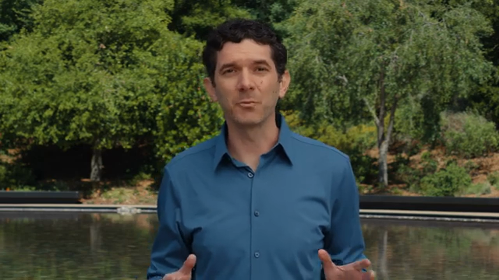

活動定位：三條主軸
完整場從開發者社群出發，說明今年 Platforms State of the Union 會聚焦三件事：Apple Intelligence、平台改進與開發者生產力。Apple 把設計與智慧視為今年平台演進的兩個核心。
意義判讀這段把一小時內容定位成開發者平台路線圖，不是產品發表會。
Apple 把設計與智慧放在同一條主線。
開場說明 Liquid Glass 與 Apple Intelligence 是 2026 releases 的重要主題，且今年會延續並回應開發者回饋。這不是單一功能更新，而是跨平台體驗與智慧能力的共同調整。
回看：00:57-01:14三大段落是 intelligence、platform improvements、developer productivity。
這三段也成為整理完整影片的骨架：先講模型與系統智慧，再講設計、SwiftUI 與 Swift，最後講 Xcode 與 agentic coding。
回看：01:39-02:18完整段落筆記：這段到底在講什麼
這段不是單純開場寒暄，而是在幫整場設定判讀角度：Apple 把開發者每天用的 technologies、frameworks、tools 放在同一個平台路線裡談。後面所有功能都不是單點發表，而是要回到「開發者怎麼把 app 做得更好」這個問題。
開場也把 Liquid Glass 與 Apple Intelligence 放在同一層。這代表今年的重點不是只有 AI，也不是只有設計；Apple 要處理的是「介面、智慧、開發工具」一起改變後，app 如何維持自己的 craft 和 domain expertise。
三條主軸可當成閱讀本頁的地圖：先看 intelligence 怎麼進 app，再看平台 UI / Swift / SwiftUI 怎麼讓 app 更彈性，最後看 Xcode 27 如何把 agentic coding 帶進日常工程。
回看：00:19-02:23